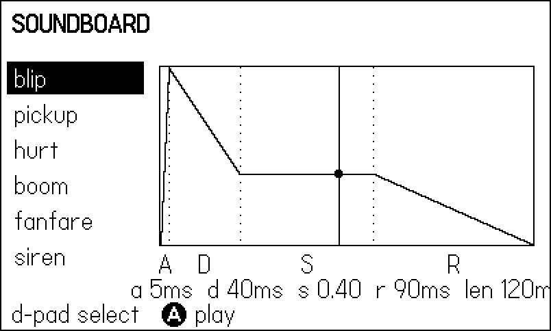
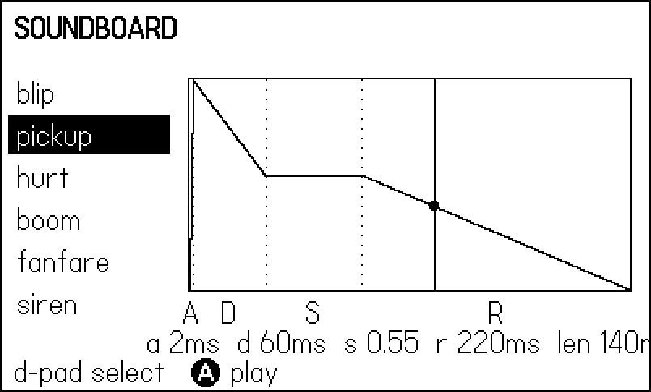
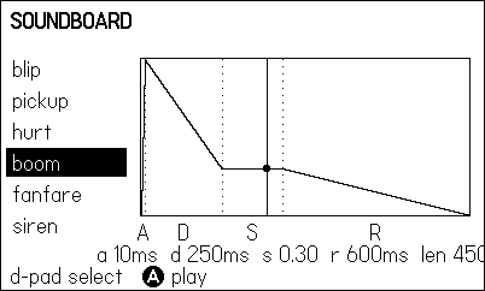

12 Synths and Sound Effects
Every sound effect in the sixty games behind this book was made the same way: no audio files, no sample libraries, just playdate.sound.synth objects playing notes from code. That is not an austerity measure. On a console with a small speaker, limited storage, and a 1-bit aesthetic, a synthesized blip is honest, weightless, and — crucially — parametric: a bounce can ring higher when the ball hits the paddle’s edge, a brick can crunch lower the deeper it sits. This chapter teaches the whole toolkit: waveforms, playNote, ADSR envelopes, noise percussion, LFOs, channels, and the sfx-module pattern the shipped games converged on.
The chapter’s example is a soundboard: the d-pad walks a list of named voices — blip, pickup, hurt, boom, fanfare, siren — and A plays the selected one. Since a printed page cannot make a sound, the soundboard earns its figures another way: while a note plays, the screen draws the voice’s amplitude envelope as a labeled curve with a playhead riding it. The figures in this chapter are the sounds, in the only form paper can carry — and reading an envelope is a skill you need anyway, because designing a sound on this hardware means designing that curve.
By the end you will be able to give a whole game a voice in about fifty lines, and you will know why those fifty lines belong in one module built at load time.
12.1 The sound engine at a glance
The Playdate audio engine runs at 44.1 kHz and thinks in terms of sources and channels. A source is anything that produces audio: a playdate.sound.synth (this chapter), a playdate.sound.sampleplayer or playdate.sound.fileplayer (sample playback and streaming, covered in Chapter 13), or a playdate.sound.instrument (a bundle of synths that plays under a sequencer, also Chapter 13). Sources are grouped into channels, each with its own volume and pan. Channels can also host effect objects — playdate.sound ships a bitcrusher, ring modulator, one- and two-pole filters, overdrive, and a delay line — which this book leaves to Inside Playdate §7.28; nothing in these two chapters needs them.
You can ignore almost all of that to get started, because of one convenient default: a source that has not been added to any channel plays on the default global channel. Make a synth, play a note, hear a sound. Channels only enter the picture when you want a group volume knob — one slider for “music”, one for “effects” — and we will wire exactly that in Chapter 13 to duck music under gameplay sounds.
12.2 One synth, one line
A synth is a waveform generator: construct it with a wave shape, then play notes on it. The entire minimal program is one chained expression — playdate.sound.synth.new(playdate.sound.kWaveSquare):playNote(440, 0.5, 0.1) plays a half-volume square-wave A for a tenth of a second (Hz, volume 0 to 1, seconds).
playdate.sound.synth.new([waveform]) accepts one of eight constants, all in the playdate.sound namespace:
kWaveSine— pure, round, soft. Good for kicks and pads.kWaveSquare— the classic chiptune beep. UI, melodies.kWaveSawtooth— buzzy and aggressive. Alarms, damage.kWaveTriangle— mellow, flute-like. Basses, gentle blips.kWaveNoise— pitched static. All percussion lives here.kWavePOPhase,kWavePODigital,kWavePOVosim— the three Pocket Operator-style waves, with extra character controlled viasynth:setParameter. Worth an evening of experimentation; not needed for anything in this book.
synth:playNote(pitch, [volume, [length, [when]]]) is the workhorse. pitch is in Hertz, or a note-name string like "Db3"; volume is 0 to 1; length is in seconds, and if you omit it the note sustains until you call synth:noteOff(). The optional when schedules the note on the audio clock (seconds since the sound engine started — an absolute time, not a delay). There is also synth:playMIDINote(note, ...), which takes a MIDI note number instead of Hertz.
The development guide distilled from the shipped games puts it bluntly: synth.new(...):playNote(freq, vol, dur) “covers a whole game’s SFX.” That is not an exaggeration. Molt — a complete arkanoidvania with seven bosses — makes every sound it has from six synths; here they are:
-- molt/source/sfx.lua:6-12
local snd = playdate.sound
local pad = snd.synth.new(snd.kWaveTriangle)
local wall = snd.synth.new(snd.kWaveTriangle)
local brickA = snd.synth.new(snd.kWaveSquare)
local brickB = snd.synth.new(snd.kWaveSquare)
local ui = snd.synth.new(snd.kWaveSquare)
local thud = snd.synth.new(snd.kWaveNoise)Synths have a one-note event queue. If you call playNote() while another note is already waiting to play, the new note replaces it. In practice this means one synth per concurrent voice: a synth is a monophonic instrument, and retriggering it cuts the note it was playing. When effects genuinely need to overlap — three explosions in the same second — you need more synths, not more calls; the round-robin pool at the end of this chapter is the pattern for that.
playNote(0) does not play a zero-frequency note; it calls noteOff() instead. The step sequencers in Chapter 13 lean on the same convention, using 0 as “rest” in their pattern tables. Also useful: playNote returns false if the note could not be added because the channel was full — if your soundscape ever goes mysteriously quiet, check that return value.
12.3 The soundboard’s voices
The chapter example organizes its sounds the way the shipped games do: one module, one table, every voice named. But where molt writes each voice as a hand-rolled function, the soundboard goes one step more data-driven, because it needs to draw the envelopes too — and a table you can play is also a table you can plot:
-- Every voice the game can make, as data: waveform, envelope, note
-- length, and the notes to play. `at` delays layered notes.
Sfx.voices = {
{ name = "blip", wave = snd.kWaveSquare, len = 0.12,
env = { a = 0.005, d = 0.04, s = 0.40, r = 0.09 },
notes = { { at = 0, freq = 880, vol = 0.40 } } },
{ name = "pickup", wave = snd.kWaveTriangle, len = 0.14,
env = { a = 0.002, d = 0.06, s = 0.55, r = 0.22 },
notes = { { at = 0, freq = 659, vol = 0.35 },
{ at = 0.07, freq = 988, vol = 0.30 } } },
{ name = "hurt", wave = snd.kWaveSawtooth, len = 0.10,
env = { a = 0.004, d = 0.05, s = 0.50, r = 0.12 },
notes = { { at = 0, freq = 220, vol = 0.35 },
{ at = 0.06, freq = 165, vol = 0.30 } } },
{ name = "boom", wave = snd.kWaveNoise, len = 0.45,
env = { a = 0.010, d = 0.25, s = 0.30, r = 0.60 },
notes = { { at = 0, freq = 90, vol = 0.55 } } },
{ name = "fanfare", wave = snd.kWaveSquare, len = 0.10,
env = { a = 0.003, d = 0.05, s = 0.60, r = 0.18 },
notes = { { at = 0, freq = 392, vol = 0.35 },
{ at = 0.11, freq = 523, vol = 0.35 },
{ at = 0.22, freq = 659, vol = 0.35 },
{ at = 0.33, freq = 784, vol = 0.35 } } },
{ name = "siren", wave = snd.kWaveSquare, len = 0.60,
env = { a = 0.020, d = 0.10, s = 0.70, r = 0.25 },
mod = vib,
notes = { { at = 0, freq = 494, vol = 0.30 } } },
}
-- Build each synth ONCE, at load. Construction allocates; playNote
-- is cheap and safe to call every frame.
for _, v in ipairs(Sfx.voices) do
v.synth = snd.synth.new(v.wave)
v.synth:setADSR(v.env.a, v.env.d, v.env.s, v.env.r)
if v.mod then v.synth:setFrequencyMod(v.mod) end
endTwo design decisions carry the weight here. First, synths are built once, at load. Construction allocates audio buffers; playNote does not. A game that calls synth.new in its update loop churns the garbage collector and eventually stalls (Chapter 19 puts numbers on that). Second, every voice is named data. The envelope numbers sit next to the notes they shape, so tuning a sound is editing four floats, not spelunking through code — and the visualization below reads the same fields.
The notes arrays with their at offsets are the layering mechanism; we will come back to them. First, the envelope fields.
12.4 Shaping a note: ADSR
A raw square wave switched on and off at full volume clicks like a relay. What makes a synthesized sound read as a thing — a raindrop, an explosion, a coin — is its amplitude envelope: how fast it rises, how it settles, how it lets go. The Playdate synth uses the classic four-stage ADSR model:
- Attack — seconds from silence to full level.
- Decay — seconds from full level down to the sustain level.
- Sustain — a level (0 to 1), not a time: the fraction of full volume the note holds while it is gated on.
- Release — seconds from the sustain level back to silence after the note ends.
You set all four with synth:setADSR(attack, decay, sustain, release), or individually with setAttack(time), setDecay(time), setSustain(level), and setRelease(time). Two refinements are worth knowing: synth:setEnvelopeCurvature(amount) morphs the segments from linear (0) to exponential (1), which sounds more natural for percussive sounds; and synth:setLegato(flag) makes a new note that starts while the previous one still sounds stay in the sustain phase instead of re-attacking — the difference between slurred and tongued phrasing if you play melodies on one synth.
How does the envelope interact with playNote’s length? The note is gated on for length seconds: attack and decay run first, whatever remains of the gate holds at the sustain level, and when the gate closes the release stage rings out past the end of the note. The soundboard turns exactly that arithmetic into its picture:
-- The envelope timeline for one note of length len: attack and
-- decay run first, sustain holds until the note gates off at len,
-- then release rings out past the end of the note.
local function envTimes(v)
local e = v.env
local hold = math.max(0, v.len - e.a - e.d)
return e.a, e.d, hold, e.r, e.a + e.d + hold + e.r
end
-- Envelope level (0..1) at time t, for the playhead dot.
local function envLevel(v, t)
local a, d, hold, r = envTimes(v)
local s = v.env.s
if t < a then return t / a end
t = t - a
if t < d then return 1 - (1 - s) * t / d end
t = t - d
if t < hold then return s end
t = t - hold
if t < r then return s * (1 - t / r) end
return 0
endThe drawing code maps the timeline onto a plot, labels the four segments, and — while a note is live — runs a playhead line across it with a dot riding the curve:
local function drawEnvelope(v, t)
local a, d, hold, r, total = envTimes(v)
local s = v.env.s
local function px(tt) return PX + tt / total * PW end
local function py(lv) return PY + PH - lv * PH end
gfx.drawRect(PX - 1, PY - 1, PW + 2, PH + 2)
gfx.drawLine(px(0), py(0), px(a), py(1))
gfx.drawLine(px(a), py(1), px(a + d), py(s))
gfx.drawLine(px(a + d), py(s), px(a + d + hold), py(s))
gfx.drawLine(px(a + d + hold), py(s), px(total), py(0))
-- dotted separators and a label under each segment
local marks = { 0, a, a + d, a + d + hold, total }
local names = { "A", "D", "S", "R" }
for i = 1, 4 do
local mx = (px(marks[i]) + px(marks[i + 1])) / 2
gfx.drawTextAligned(names[i], mx, PY + PH + 6,
kTextAlignment.center)
end
for i = 2, 4 do
for y = PY, PY + PH, 6 do
gfx.drawPixel(px(marks[i]), y)
end
end
-- playhead: a vertical line at t, a dot riding the curve
if t and t <= total then
local x = px(t)
gfx.drawLine(x, PY, x, PY + PH)
gfx.fillCircleAtPoint(x, py(envLevel(v, t)), 3)
end
endNow compare three voices that could not sound less alike, purely by their curves. The blip (Figure 12.1) is all edges: a 5 ms attack, a fast drop to a low sustain, and it is gone in a fifth of a second. That shape is why it reads as interface rather than world — nothing physical starts and stops that cleanly.

The pickup (Figure 12.2) holds a high sustain and then takes a long 220 ms release — the playhead in the figure is inside that release tail. The tail is what makes a collectable feel rewarding; cut it to 50 ms and the same two notes turn curt and mechanical.

The boom (Figure 12.3) inverts every proportion: slow-ish attack, a long decay to a rumbling sustain, and a 600 ms release, all on the noise wave. Envelopes are most of what makes noise percussion work, as the next section shows.

12.5 Noise is your drum kit
kWaveNoise produces pitched static: the pitch argument still matters, sliding the noise from a low rumble to a bright hiss. Every percussive sound in the shipped games is a noise note wearing the right envelope:
- Thud / body hit — low pitch (70–180 Hz), medium length: molt’s
Sfx.miss()isthud:playNote(70, 0.5, 0.35). - Hi-hat — high pitch (2300–3000 Hz), tiny length (25 ms closed, 120 ms open), low volume. Weasel War Dance’s snare and both hats are two noise synths; only its kick is a sine.
- Explosion — a descending series of noise notes, each lower than the last, so the boom seems to collapse:
-- tiles/core/tsnd.lua:30-36 (rewrapped): descending noise sweep
function Snd.boom(freq, n)
for i = 0, (n or 3) - 1 do
Util.after(i * 0.05, function()
Snd.play("noise", (freq or 220) * (1 - i * 0.2),
0.08, 0.3)
end)
end
endThat Util.after is a deferred-call queue — molt has the same one — and it is the second half of the sfx pattern.
12.6 Layered effects: the deferred queue
One note is a blip; a sound effect is often two or three notes a few beats apart. An arpeggiated fanfare, a two-tone pickup, an explosion with a rolling echo — all of these need “play this, then that, 80 ms later.” You could reach for playdate.timer, or for playNote’s when argument, but the games use something simpler that stays on the game clock: a queue of {delay, closure} pairs, drained by the update loop with the fixed DT:
-- A deferred queue: a layered effect is just notes scheduled a few
-- ticks apart. Sfx.update drains the queue with the fixed DT.
local queue = {}
local function after(delay, fn)
queue[#queue + 1] = { t = delay, fn = fn }
end
function Sfx.update(dt)
for i = #queue, 1, -1 do
local q = queue[i]
q.t = q.t - dt
if q.t <= 0 then
table.remove(queue, i)
q.fn()
end
end
endPlaying a voice walks its note list, firing the immediate note now and queuing the rest:
function Sfx.play(v)
for _, n in ipairs(v.notes) do
if n.at == 0 then
v.synth:playNote(n.freq, n.vol, v.len)
else
after(n.at, function()
v.synth:playNote(n.freq, n.vol, v.len)
end)
end
end
Harness.count("plays")
Harness.count(v.name)
endThis is precisely how molt builds its level-clear fanfare — four square-wave notes climbing an arpeggio, spaced 110 ms apart on the deferred queue:
-- molt/source/sfx.lua:48-52 (rewrapped to fit the page)
function Sfx.fanfare()
for i, f in ipairs({ 392, 523, 659, 784 }) do
Util.after((i - 1) * 0.11,
function() ui:playNote(f, 0.35, 0.1) end)
end
endMolt (molt/source/sfx.lua:1-52) gives a complete game fourteen named effects from six synths and one deferred queue, in 52 lines, with zero asset files. The molt-back dirge is the fanfare pattern reversed — a descending minor line, one grave note every 160 ms — proof that the same two tools (named voices plus deferred notes) cover triumph and disaster alike. The pattern survived contact with seven more games unchanged; when a convention keeps getting copied verbatim, that is the codebase telling you it is done.
Why not playNote’s when parameter? Because when is absolute audio-engine time, it plays the note even if the game pauses, and it cannot be cancelled by game logic. The queue lives in your update loop: pause the loop and the echo pauses with it.
12.7 Say it with pitch
A parametric synth call can carry gameplay information for free. The pattern costs one arithmetic expression:
-- molt/source/sfx.lua:14-25 (excerpt, rewrapped)
function Sfx.paddle(off) -- off in [-1,1]: edge hits ring higher
pad:playNote(170 + math.abs(off) * 80, 0.35, 0.07)
end
function Sfx.brick(row) -- deeper rows crunch lower
brickA:playNote(370 + (C.ROWS - row) * 18, 0.35, 0.05)
Util.after(0.06, function()
brickB:playNote(587, 0.3, 0.06)
end)
endA player who never looks at the ball still hears where it met the paddle and how deep the broken brick sat. On a screen this small, audio is a second display; spend the pitch axis on something.
12.8 Wobble: LFOs and modulation
An LFO (low-frequency oscillator) is a slow wave you wire into a synth parameter instead of hearing directly. The soundboard’s siren voice gets its wail from one:
-- A vibrato LFO for the siren, wired into its frequency. Depth is
-- a fraction of the note frequency; rate is cycles per second.
local vib = snd.lfo.new(snd.kLFOTriangle)
vib:setRate(8)
vib:setDepth(0.06)The build loop attaches it with v.synth:setFrequencyMod(v.mod) (pass nil later to detach). At 8 Hz and a shallow depth, the pitch of the siren’s held note wobbles quickly — vibrato. Slow the rate to 1 Hz and deepen it and you have a true two-tone siren.
playdate.sound.lfo.new([type]) takes one of kLFOSine, kLFOSquare, kLFOTriangle, kLFOSawtoothUp, kLFOSawtoothDown, or kLFOSampleAndHold (stepped random — instant sci-fi computer noises). The useful controls: setRate(hz), setDepth(d), setCenter(c), setDelay(holdoff, ramp) to fade the wobble in, setRetrigger(flag) to restart the LFO’s phase on each new note, and setGlobal(flag) to keep it running even while no note plays, so successive notes land at different points of the wobble. The party trick is lfo:setArpeggio(0, 4, 7, 12): the LFO becomes a stepped pitch sequence in half-steps — that particular one plays a major chord, and it is the cheapest “magic sparkle” on the platform. Synths accept a modulator on amplitude too (setAmplitudeMod), where a slow LFO gives tremolo.
12.9 A recipe book
Sound design from scratch is less mystical than it looks, because on this synth the search space is small: pick a wave for the material, an envelope for the physics, and, if the sound is an event with structure, a second note on the deferred queue. The questions to ask, in order:
- What is it made of? Metal and interface: square. Wood, flesh, and impact: noise or a low triangle. Air, alarms, and engines: sawtooth. Magic and bells: sine or triangle up high.
- How does it start? Struck things have a near-zero attack; swelled things (whooshes, engines, dread) take 20–100 ms.
- How does it end? Dry things stop (release under 100 ms); resonant or rewarding things ring (150–600 ms).
- Does it move? Rising pitch reads as gain, falling as loss — a two-note rise is a pickup, the same two notes reversed are a hurt. A falling sweep of noise is a collapse.
Some proven starting points, all tuned live on the soundboard by editing the voices table and rebuilding:
| Sound | Wave | Envelope | Structure |
|---|---|---|---|
| jump | triangle | a 5, d 60, s .4, r 80 (ms) | one note, 300→450 Hz feel via short pitch rise |
| coin | square | a 2, d 40, s .6, r 150 | two notes up a fourth, 70 ms apart |
| laser | sawtooth | a 2, d 30, s .3, r 60 | high start, queue 2 falling notes |
| footstep | noise | a 2, d 25, s .1, r 30 | one quiet low note, vary pitch ±10% |
| splash | noise | a 15, d 120, s .3, r 250 | mid pitch, then one lower note |
| alarm | square | a 10, d 0, s 1, r 40 | long note + slow deep LFO on frequency |
The ±10% on the footstep matters more than it looks: repeating any synth note verbatim sounds like a machine gun. One line of jitter — freq * (0.95 + math.random() * 0.1) — restores life. (Seed the RNG per Chapter 3 if your capture runs must stay deterministic.)
The fastest tuning loop is the soundboard itself: because voices are data, auditioning a candidate sound is appending one table entry, and make run gets you a simulator with the d-pad as your patch selector. Keep the example around as a scratchpad — every game you build after this chapter can steal its sfx.lua wholesale and simply swap the voice table.
12.10 When one synth is not enough: round-robin pools
Retriggering a synth cuts the note it was playing. Usually that is fine — a blip interrupting a blip is inaudible — but for longer sounds that legitimately overlap (three enemies exploding across half a second), the tiles engine allocates a small pool per wave and rotates through it:
-- tiles/core/tsnd.lua:17-27
function Snd.play(wave, freq, dur, vol)
local pool = pools[wave]
if not pool then
pool = {}
for i = 1, 3 do pool[i] = snd.synth.new(waves[wave]) end
pools[wave] = pool
idx[wave] = 0
end
idx[wave] = idx[wave] % 3 + 1
pool[idx[wave]]:playNote(freq, vol or 0.25, dur or 0.1)
endThree voices per wave is empirically enough: by the time a fourth overlapping boom arrives, stealing the oldest one is inaudible in the mix. Note that the pool still allocates lazily once — the first call per wave builds it; every later call is allocation-free.
12.11 Channels and the volume knob
When a game grows a settings screen, “SFX volume” should be one call, not a constant threaded through forty playNotes. That is what channels are for. This is the tempting shortcut:
-- anti-pattern: per-call volume math, everywhere, forever
synth:playNote(440, 0.4 * Save.sfxVolume, 0.1)Instead, create playdate.sound.channel.new(), add each synth once with channel:addSource(synth), and scale everything at the channel: channel:setVolume(v) (0 to 1), channel:setPan(p) (-1 left to 1 right, though the built-in speaker is mono — pan only matters on headphones). Sources you never assign stay on the default global channel. The soundboard is single-purpose enough to live entirely on the default channel; Chapter 13 puts its three music synths on a dedicated channel and turns that one volume knob into automatic ducking under gameplay effects.
12.12 Driving the board
The input side follows the harness seam from Chapter 3 — consult the bot first, fall back to real buttons:
local function input()
local bot = Harness.input(frame)
local up = bot and bot.up
or playdate.buttonJustPressed(playdate.kButtonUp)
local down = bot and bot.down
or playdate.buttonJustPressed(playdate.kButtonDown)
local a = bot and bot.a
or playdate.buttonJustPressed(playdate.kButtonA)
if up and sel > 1 then
sel = sel - 1
noteT = nil
end
if down and sel < #Sfx.voices then
sel = sel + 1
noteT = nil
end
if a then
Sfx.play(Sfx.voices[sel])
noteT = 0
end
endThe figure script plays blip, pickup, and boom at known frames and shoots each envelope mid-note; two extra presses exercise the fanfare’s deferred queue and the siren’s LFO so the capture run (which doubles as this example’s smoke test — see Chapter 18) executes every code path:
-- Figure script: play three contrasting voices and shoot each one
-- mid-note, so the playhead is visible on the envelope. The later
-- presses exercise fanfare's deferred queue and the siren's LFO.
Shots = {
seed = 1,
last = 240,
shots = {
["sfx-blip"] = 13,
["sfx-pickup"] = 52,
["sfx-boom"] = 96,
},
script = function(frame)
return {
a = (frame == 10 or frame == 46 or frame == 84
or frame == 126 or frame == 166),
down = (frame == 40 or frame == 70 or frame == 76
or frame == 120 or frame == 156),
}
end,
}Every play also bumps a named counter via Harness.count, so the heartbeat from a capture run reports plays, blip, boom, and friends — a voice whose counter stays at zero is a bug you can read straight off the telemetry, without listening to anything.
12.13 What you know now
- The audio engine plays sources through channels; unrouted sources land on the default global channel at 44.1 kHz.
sound.synth.new(waveform)with the eightkWave*constants, thensynth:playNote(freq, vol, len), covers a whole game’s sound effects. Build synths at load; a synth buffers only one pending note, and a newplayNotereplaces it.- ADSR —
setADSR, orsetAttack/setDecay/setSustain/setRelease— is where a sound’s character lives; sustain is a level, the others are times, and release rings past the note’s gate.setEnvelopeCurvatureandsetLegatorefine it. - Percussion is
kWaveNoiseplus the right envelope; explosions are descending noise sweeps on a deferred queue. - The house pattern: one module, one named voice per synth, a
{delay, fn}queue drained with the fixedDTfor layered effects, and pitch used to carry gameplay information. - LFOs (
sound.lfo) modulate frequency or amplitude for vibrato, sirens, and arpeggios; round-robin pools handle overlap; channels give you group volume for free.
Next, the other half of the audio story: Chapter 13 turns these same synths into music, twice — once with the SDK’s sequencer, and once with the drift-free step clock the shipped games dance to.